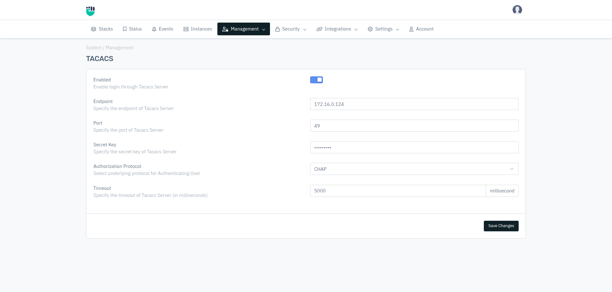
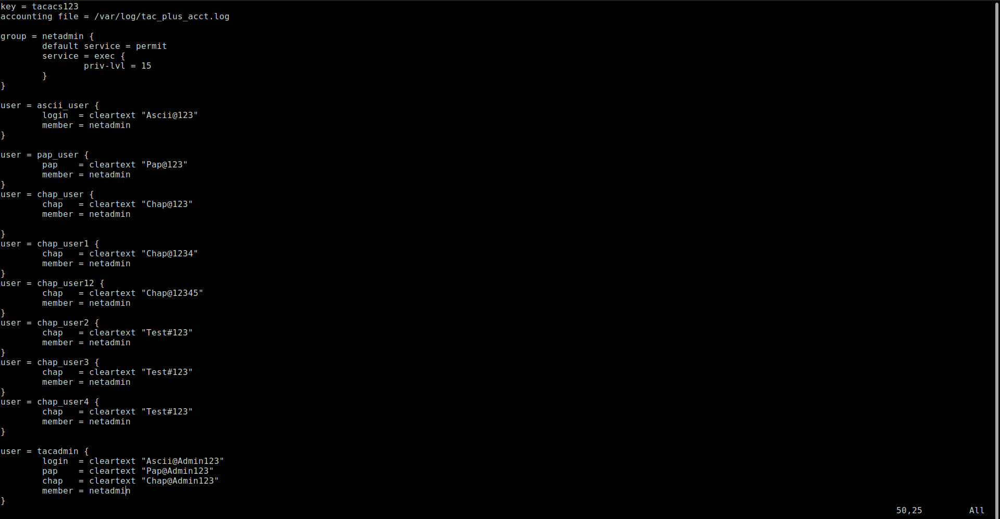

TACACS Server — CHAP Login Guide
This guide walks you through the complete process of setting up a TACACS user and logging into the Haltdos UI using CHAP authentication — step by step, from server configuration to successful login. No prior TACACS knowledge required.
Prerequisites
Before you begin, make sure you have:
- Access to the Haltdos dashboard with admin privileges
- SSH / terminal access to the TACACS server machine
- Docker running on the TACACS server with the
tacpluscontainer active
Step-by-Step Guide
Configure the TACACS Server in Haltdos UI
Go to Management → TACACS in the Haltdos dashboard. Fill in the configuration fields below and click Save Changes.
| Field | Value | Description |
|---|---|---|
| Enabled | Enabled | Enable login through TACACS Server |
| Endpoint | 172.16.0.124 |
IP address or hostname of your TACACS server |
| Port | 49 |
Default TACACS+ port — do not change unless your server uses a custom port |
| Secret Key | tacacs123 |
Shared secret — must match the key in your tac_plus.conf file exactly
|
| Authorization Protocol | CHAP |
Select CHAP as the authentication protocol |
| Timeout | 5000 ms |
How long Haltdos waits for a TACACS response before giving up |

⚠️ Important: The Secret Key set here must exactly match
the key value at the top of your tac_plus.conf file on the server.
A mismatch will cause all authentication to silently fail.
SSH into the TACACS Server & Add a New User
Open your terminal and SSH into the machine running the TACACS Docker container. Then open the TACACS configuration file:
vi /home/haltdos/tacplus_image/tac_plus.confThe file contains the server's secret key at the top, followed by group and user definitions. It will look like the screenshot below — with existing example users for ASCII, PAP, and CHAP protocols:

Scroll to the bottom and add a new CHAP user block following this exact format. Replace
your_username and YourPassword123 with your desired values:
user = your_username {
chap = cleartext "YourPassword123"
member = netadmin
}💡 The value inside cleartext "..." is the password you will use to log in
on
the Haltdos UI. Write it down — you will need it in Step 6.
Save the file (:wq in vim), then restart the Docker container to apply the
changes:
sudo docker restart tacplus⚠️ The container must be restarted — changes to
tac_plus.conf
are not picked up automatically while the container is running.
Go to Management → Administrators
Back in the Haltdos dashboard, navigate to Management → Administrators. This is where you register the TACACS user so the system knows to authenticate them via the TACACS server.
Add the TACACS User as an Administrator
Click Add Administrator and fill in the form exactly as shown below:

| Field | Value | Notes |
|---|---|---|
| Name | tester (any display name) |
A friendly label for this admin — can be anything you like |
| Login Mode | TACACS |
Must be TACACS — this tells Haltdos to authenticate via the TACACS server |
| Username | chap_user3 |
⚠️ Must exactly match the username in tac_plus.conf —
case-sensitive
|
| Any valid email | Used for system notifications only |
Click Save Changes to register the administrator.
⚠️ Critical: The Username field must be
letter-for-letter
identical to what you added in tac_plus.conf in Step 2. Any difference —
including capitalization — will cause login to fail.
Log Out from the Current Admin Session
You must log out of the current session before testing the TACACS login. Click your user avatar or account menu in the top-right corner of the Haltdos dashboard and select Logout.
Log In Using the TACACS User Credentials
On the Haltdos login screen, enter the TACACS user credentials you configured in Steps 2 and 4:
| Field | What to enter |
|---|---|
| Username / Email | The username from tac_plus.conf — e.g. chap_user3 |
| Password | The CHAP cleartext value from tac_plus.conf — e.g.
Test#123
|
Click Login → to authenticate.
Successfully Logged In as TACACS User 🎉
✅ Congratulations! You are now logged into the Haltdos dashboard as a TACACS-authenticated user. The CHAP authentication flow is working correctly end-to-end.
You will land on the Account page. The username shown in the profile panel confirms which TACACS user is logged in. You can verify it matches the username from Steps 2 and 4.